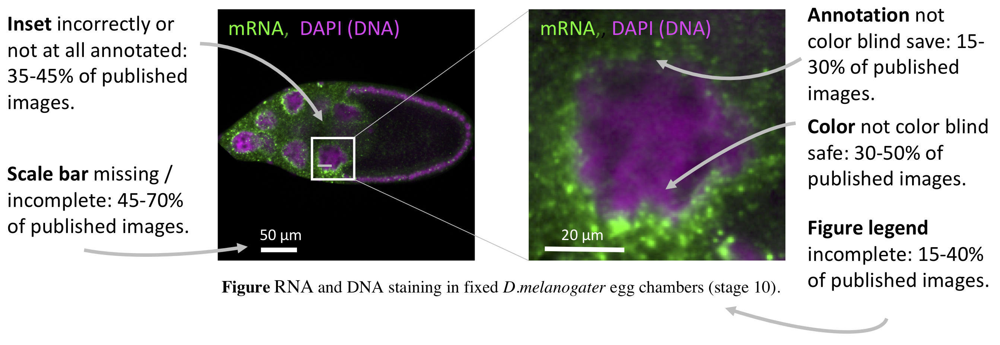

Many papers, many images, many problems
500 papers are newly indexed in PubMed every day, almost 1 million each year (PubMed Statistics). Many of these contain images: 20% have a photos, light or electron microscopy images, x-rays or similar (see Lee, 2018). These images document the appearance or structure of specimen, tissues, or cells, and are a analysed to gain quantitative insights of biological processes.
What we did
Not too long ago a motivated group of scientists including me systematically analyzed the clarity and legibility of images (Jambor et al., 2021). It turns out, in only a fraction of the publications, 10-20%, images are fully accessible and interpretable. To get to this number, we surveyed the image quality in the top journals, based on impact factor, in three representative fields, physiology, cell biology and plant sciences. We used a validated protocol and each article was assessed by two independent reviewers. The screening protocol covered diverse aspects: the image presentation in the figure, the completeness of feature annotations, presence of scale information, accessible image colors, and informative image titles/legends.

Scale information: missing in up to 70% of papers
This is possibly the most unexpected finding: many images in publications lack sufficient information about physical scales. This is unexpected as each of us had some memories of being taught about scale bars early in our careers, if not already in high-school biology. Scale information can come in many forms and all of them were acceptable to us: as scale bar inside the image, as information about the physical size of the entire image in figures, and even an indication of the magnification were deemed acceptable. This however was entirely missing in 10-30% of the papers and incomplete in another 30-40%.
Colors: often not accessible to color blind
Red/Green color blindness affects around 10% of the male population, and less than 1% of the female population. Nonetheless, astonishingly 30 - 50% of the screened images were not color blind friendly! In addition, in around 20% of images the annotations of colors were not color blind save. This means that colorblind readers are hindered in seeing or fully understand the key scientific messages conveyed in these images.
Details: not visible, or insets not explained
Just like in photography, also in microscopy the key subject should ideally fill the frame. What does this mean? If you want to show a cellular detail, do not show the entire petri dish of cells – cutting unnecessary image details is allowed, if this does not change the conclusion! Likewise, if you aim to show morphology of an organ, make sure that said organ is fully visible – image stitching, if declared (legend, methods), is possible and allowed. Many times an overview, e.g. of cell culture dish and a focus on some detail is shown with two images side by side, one the original image and alongside this a zoomed inset. In one third of publications, likely accidental, the origin of the inset in the original image is not clearly indicated or entirely missing. This hinders the audiences to understand the relation of inset to image, especially since in half of the cases the inset is also not explained in the legend.
Annotations: incomplete
Speaking of annotations – they are not optional, despite what the data suggest: up to 30% of publications omit an explanation of the colors shown in images (e.g., channel, staining), up to 40% fail to explain symbols, regions of interest, or arrows, and many times the species or cell type visible in the image is not clear from the legend. Especially all colors and symbols must essentially be explained with the figure, while further details such as specimen could also be described in the method section – alas, it is also missing very often in this section, but that is another story (Marques G, 2020; Sheen et al., 2019).

A happy ending
We showed that across all criteria, only 1/5 th of publications with images show fully interpretable images. Beyond our analysis, many papers also fail to understandably present data on image acquisition, imaging methods and also image processing details. We as scientific community have to ensure that our scientific data is truthful and reliable, and also understandable to current and future readers. Incomprehensible images limit effective science communication and we should strive to improve all data we present in publications.
I have compiled a series of blog posts “How to… Publish Images” that provide a rapid guidance and links to further resources.- How to… image formatting (August 1) Link to blog
- How to… image scale information (August 3) Link to blog
- How to… image annotation (August 8)Link to blog
- How to… image colors (August 10)
- How to… image availability (August 15)
- How to… image analysis (tbd)
PS if you are interested, I usually write about more general visualizations, e.g., How to create Graphical Abstracts
Read more
- Our article assessing the current quality of images and Recommendations for Creating clear and informative image-based figures for scientific publications. Jambor, H., Antonietti, A., Alicea, B., Audisio, T.L., Auer, S., Bhardwaj, V., Burgess, S.J., Ferling, I., Gazda, M.A., Hoeppner, L.H., Ilangovan, V., Lo, H., Olson, M., Mohamed, S.Y., Sarabipour, S., Varma, A., Walavalkar, K., Wissink, E.M., Weissgerber, T.L., 2021. PLoS Biol
- A study quantifying how many images are in publications. Viziometrics: Analyzing Visual Information in the Scientific Literature.Lee P IEEE Transactions on Big Data 2018;4:117-29.
-
Imaging methods are vastly underreported in biomedical research.Marques G, P.T., Sanders MA, 2020. Elife 2020.
- A big Replication Study that also includes image data: Biomechanical remodeling of the microenvironment by stromal caveolin-1 favors tumor invasion and metastasis.Sheen, M.R., Fields, J.L., Northan, B., Lacoste, J., Ang, L.-H., Fiering, S., Reproducibility Project: Cancer Biology, 2019. eLife 8, e45120.